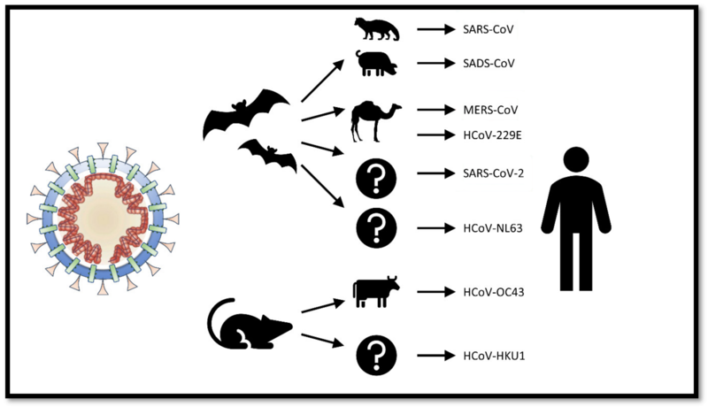

CoronaVirus
What is CoronaVirus
Coronaviruses are a group of related RNA viruses that cause diseases in mammals and birds. In humans, these viruses cause respiratory tract infections that can range from mild to lethal. Mild illnesses include some cases of the common cold (which is also caused by other viruses, predominantly rhinoviruses), while more lethal varieties can cause SARS, MERS, and COVID-19. Symptoms in other species vary: in chickens, they cause an upper respiratory tract disease, while in cows and pigs they cause diarrhea. There are as yet no vaccines or antiviral drugs to prevent or treat human coronavirus infections.
History
Coronaviruses were first discovered in the 1930s when an acute respiratory infection of domesticated chickens was shown to be caused by infectious bronchitis virus (IBV). Arthur Schalk and M.C. Hawn described in 1931 a new respiratory infection of chickens in North Dakota. The infection of new-born chicks was characterized by gasping and listlessness. The chicks' mortality rate was 40–90%. Fred Beaudette and Charles Hudson six years later successfully isolated and cultivated the infectious bronchitis virus which caused the disease. It was not realized at the time that these three different viruses were related.
Human coronaviruses were discovered in the 1960s.
Structure

Coronaviruses are large, roughly spherical, particles with bulbous surface projections.The viral envelope consists of a lipid bilayer, in which the membrane (M), envelope (E) and spike (S) structural proteins are anchored.The coronavirus surface spikes are homotrimers of the S protein.
Origin
Origins of human coronaviruses with possible intermediate hosts The most recent common ancestor (MRCA) of all coronaviruses is estimated to have existed as recently as 8000 BCE, although some models place the common ancestor as far back as 55 million years or more, implying long term coevolution with bat and avian species. The most recent common ancestor of the alphacoronavirus line has been placed at about 2400 BCE, of the betacoronavirus line at 3300 BCE, of the gammacoronavirus line at 2800 BCE, and of the deltacoronavirus line at about 3000 BCE. Bats and birds, as warm-blooded flying vertebrates, are an ideal natural reservoir for the coronavirus gene pool.